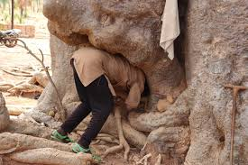
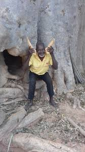
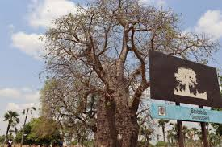

Description
Le Baobab sacré de Banfora est un arbre ancien et emblématique, respecté par les habitants locaux pour ses valeurs culturelles et spirituelles. Il est souvent au centre de cérémonies traditionnelles et symbolise la vie, la force et la sagesse dans la région.
Historique
Ce baobab a été protégé pendant des générations par les communautés locales qui lui attribuent des pouvoirs sacrés. Il est un témoin vivant de l’histoire et des traditions ancestrales de Banfora, attirant des visiteurs curieux de découvrir ce patrimoine naturel et culturel.
Galerie photos


